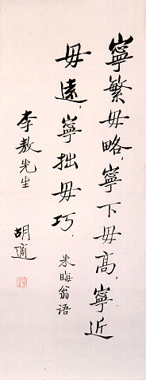

義助慰安婦 —— 李敖百件珍藏義賣藝術品（第88件） 品 名： I1. 胡適贈李敖條幅 預估價： 100 萬 成交價： 100 萬 說 明： 有些人待人隨和，借錢給人也不吝嗇，但卻不輕易為人寫字，比如蔡襄，皇帝跟他要字，他卻不肯給。李敖在台大歷史系念書時，寫過〈讀胡適文存〉一文登《自由中國》雜誌，胡適很欣賞，寫了一篇墨寶給李敖，字體極其秀氣，道今天已有四十年了。嚴格地說，這亦屬台灣史料的一部份，因為它象徵出五四人物文化傳承的意義。 
有些人待人隨和，借錢給人也不吝嗇，但卻不輕易為人寫字，比如蔡襄，皇帝跟他要字，他卻不肯給。李敖在台大歷史系念書時，寫過〈讀胡適文存〉一文登《自由中國》雜誌，胡適很欣賞，寫了一篇墨寶給李敖，字體極其秀氣，道今天已有四十年了。嚴格地說，這亦屬台灣史料的一部份，因為它象徵出五四人物文化傳承的意義。